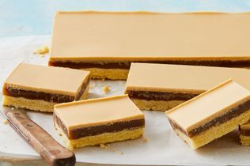

Butterscotch Shortbread
With a buttery shortbread base, rich butterscotch sauce filling and topping of melted Caramilk chocolate, this slice is impossible to resist.
Ingredients
- 1 cup plain flour
- 1/2 cup icing sugar
- 100g cold butter, chopped
- 1 egg yolk
- 100g Cadbury Caramilk chocolate
- 1/2 tsp vegetable oil
- 125g unsalted butter
- 1 cup firmly packed brown sugar
- 4 tbsp thickened cream
- 1/2 tsp sea salt flakes
Steps
- Step 1
Grease a 27cm x 17cm slice pan and line the base and sides with baking paper.
- Step 2
Place flour, icing sugar and butter in a food processor and process until mixture resembles breadcrumbs. Add egg yolk and process until the dough starts to clump together. Place in prepared pan and press to the edge. Refrigerate for 30 minutes.
- Step 3
Preheat oven to 190C/170C fan-forced. Line pastry base with baking paper. Fill with pastry weights or uncooked rice. Blind-bake for 20 minutes or until base starts to turn golden. Remove paper and weights. Bake for a further 5 minutes or until the base is cooked.
- Step 4
To make butterscotch sauce, melt butter in a saucepan over a medium-high heat. Add sugar, cream and salt and stir until combined. Bring to the boil, reduce heat slightly and cook for 4 to 5 minutes or until the sugar has melted and the sauce has thickened. Pour over pastry and refrigerate for 1 to 2 hours or until set.
- Step 5
Melt chocolate in a heatproof bowl over a saucepan of simmering water (don’t let the bowl touch the water). Add oil and stir until smooth. Remove from heat and set aside to cool. Pour over slice and spread to the edges. Refrigerate until set. Cut into thick fingers to serve.